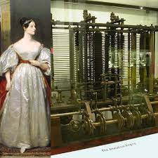

Introduction
Dive into the fascinating story of Ada Lovelace, an extraordinary figure in the history of technology. Her visionary contributions to computer science continue to inspire generations. Born in 1815, Ada Lovelace is celebrated as the world's first computer programmer, long before the actual computers were invented.
Early Life
Ada Lovelace was born Augusta Ada Byron, the only legitimate child of the famous poet Lord Byron and his wife, Lady Byron. Just weeks after Ada's birth, her mother left Lord Byron, and Ada never met her father.
Lady Byron promoted Ada's interests:
- Mathematics
- Logic
- A stark contrast to her father's poetic legacy to steer her away from his turbulent lifestyle.
you can learn more about her @ Biography
Education and Intellectual Pursuits
From a young age, Ada showed a deep interest in mathematics and science, an unusual pursuit for women in the 19th century. She was tutored by some of the most distinguished intellectuals of her time. Her advanced education allowed Ada to cultivate the skills that would later define her contributions to computing.
Collaboration with Charles Babbage

In 1833, Ada was introduced to Charles Babbage, and she became fascinated with his invention, the Difference Engine, and later, the Analytical Engine. Her most notable work was her detailed notes on the Analytical Engine, which included the first algorithm intended to be processed by a machine.
Know about her work with Charles Babbage @ Work
The First Computer Program

Ada's notes on the Analytical Engine went beyond simple commentary. She envisioned a future where machines like the Analytical Engine could manipulate symbols by rules and that these machines could act upon anything that could be notated symbolically. Her published notes include a method for calculating a sequence of Bernoulli numbers, effectively creating the first computer program.
Legacy and Recognition
Ada Lovelace died at the young age of 36, but her legacy endures. She is recognized for her mathematical genius and her vision of the future of computing. Ada Lovelace Day, celebrated in October, honors her contributions and the achievements of women in STEM fields.
Conclusion: A Legacy Beyond Numbers

Ada Lovelace's story is a testament to the power of imagination and intellect. As the first computer programmer, she paved the way for the technological advances that shape our world today. Lovelace remains a symbol of innovation and inspiration for those who dream of a future driven by the fusion of humanity and technology.